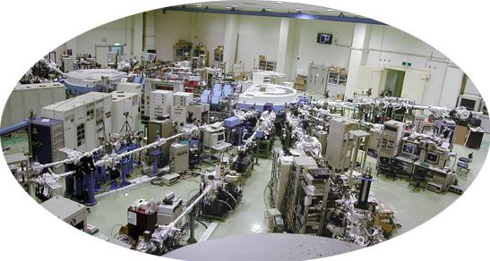

放射光による固体物理学の研究について
〜光物性研究室の構想１〜
I have a dream.
理学研究科物理科学専攻・教授
放射光科学研究センター・センター長谷口雅樹
私は1987年以来、すべてを投げ打って、捨て身で放射光計画の推進にあたり、
創設、建設・立ち上げに総力をあげて取り組んできました。
その際、次のことが大切です。
→【構想２】学部・修士・博士課程を歩む若者たちへ
↑戻る
（個性輝く放射光科学研究拠点）
大学という教育・研究の現場に設置された放射光実験施設である事を最大限に生かして、 明日を担う若者が夢と希望を抱くことのできるような、個性輝く研究拠点を作って行きたいと考えています。 そのためには、世界レベルの研究成果を継続的にあげて行くことが不可欠です。 光物性は放射光科学研究センターと協力して、固体物理の新しい領域の開拓をめざしています。

HiSOR実験ホール
HiSOR実験ホール
（放射光による固体物理研究）
固体物理の実験研究の基本は、- 計画を立案する、
- 結晶を育成し結晶の基本特性を分析・評価する、
- 目指す物性を調べる、
- データを解析する、
- 成果を論文にまとめる事
その際、次のことが大切です。
- 固体物理学における意義、位置付けが明快であること。
- 結晶をほかから提供して頂いて共同研究を進める形態は、研究者の輪をひろげ、互いに啓発できるという意味で大変重要と考えています。私達が自力で育成するのが困難な場合はこれでいいと思います。
光物性では、研究の自由度を確保する意味でも、また、オリジナリティーを打ち出してゆくためにも、試料結晶は研究室で可能な限り育成・評価するのが基本であると考えています。このようなコンセプ トのもとに、薄膜単結晶育成、バルク結晶育成に積極的に取り組んできています。
- 世界最高精度の計測、世界で唯一の実験手法など、光物性の個性を発揮する光電子・逆光電子分光、高分解能低温光電子分光、スピン分解光電子・逆光電子分光など、オリジナリティーの高い実験研究に装置開発が不可欠です。
- 解析プログラムの整備などをシステマティックにすすめます。現在、ほとんどそろっています。
- 研究者の主張を明快に打ち出す事、平易なことばで、簡潔にわかりやすく表現する事が大切です。普段から一流の学術論文に慣れ親しむのが一番の近道です。
○放射光を用いたmeV分解能光電子分光
現在すでに世界を代表する米国Advanced Light Source, Stanford 大学放射光実験施設等を 総合性能でしのぐに至っています。 広島では、優れたサイエンスの展開を図りながら、現有機に比べ数倍高効率の次世代装置の開発に着手しています。 国際競争の中で先進性とステータスの確保、フェルミオロジー（フェルミ準位近傍の電子状態の研究）の分野で 研究拠点形成を進めます。○スピン分解光電子・逆光電子分光
スピン分解光電子・逆光電子分光が実験室光源を用いてはじまる寸前の状態にあります。 また、アンジュレータからのチューナブルフォトンを用いたスピン分解光電子・逆光電子分光ビームラインプロジェクトが、 究極の電子構造決定の実現を目指して進行中です。 実験室光源を用いたスピン分解光電子・逆光電子分光が稼働を始めるだけで、 広島がスピン分解光電子・逆光電子分光を同一の試料に対して適用できる世界で唯一の拠点となり、 表面磁性の新分野開拓をリードします。○試料の評価が大切
いくら観測装置が立派でも、試料の評価が不十分だと、データ解析が困難で研究になりません。 広島では標準的な分析装置だけでなく、世界を先取りする形で温度可変STM/AFM、SMOKE、PEEMなどの評価装置を導入し、 放射光研究の質の高度化に努めています。○自前の試料での研究が基本
石英アンプルを用いた結晶成長だけでなく、特に、超高真空中での単結晶成長を推進しています。 ホットウォールエピタキシー、分子線エピタキシー、レーザーアブレーション、超薄膜育成など、 バルク物質合成のプロがなかなか手を出せない分野で、得意技を発揮、仮によそからの試料がなくても、 自前で物理学研究を展開できる環境を整備しています。○物質開発、理論グループとの共同研究
観測精度が格段にあがると、物質の素性が細部にまで押さえられた試料を用いるのが鉄則なります。 また、従来見えなかった状態が鮮明に見えて来たとき、理論解析も必要になります。 放射光計画がスタートする何年も前から将来を夢みて、このような協力体制を作ってきました。 現在、いくつかの芽が花となって見事に咲いています。→【構想２】学部・修士・博士課程を歩む若者たちへ
↑戻る